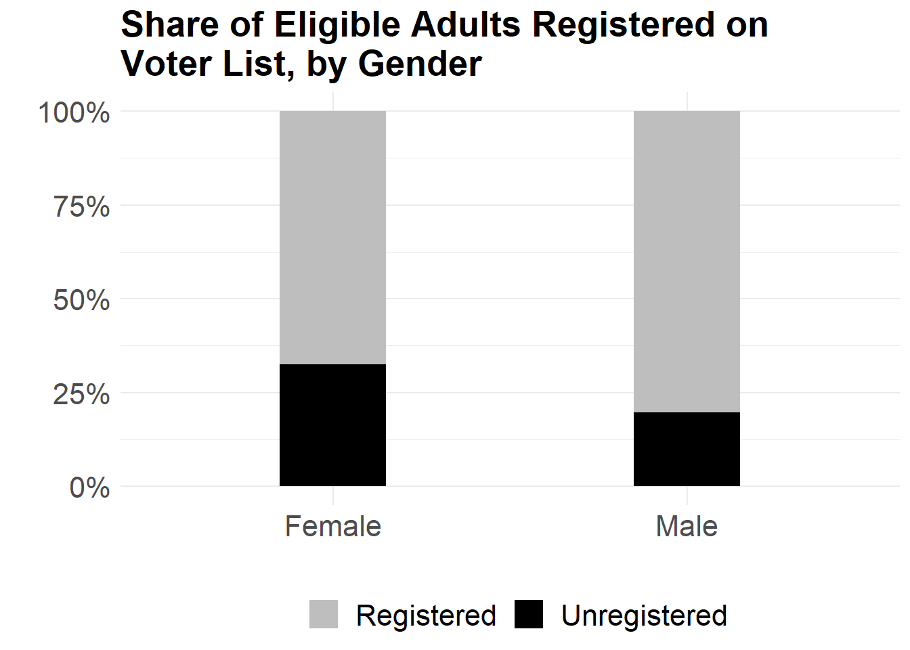
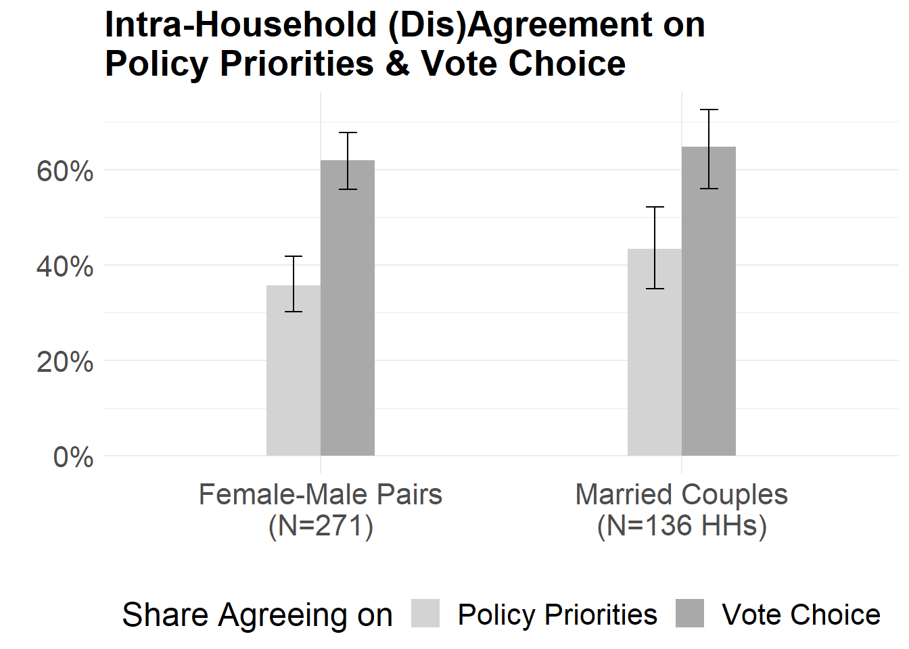

Research
Research
Book Project
Why Women Vote: When and How Clientelism Closes the Gender Turnout Gap (Based on Dissertation)
When do women turn out at equal rates to men? My book project re-investigates this question in the context of developing countries. Existing theories of women’s political participation are largely resource-based, yet in many developing countries, women turn out at par with men in the face of low levels of economic development and female labor force participation, and despite gendered differences in individual-level resource endowments. Based on an in-depth investigation of India, I argue that there is a second path to women’s equal political participation that does not rely on individual-level resources, but instead depends on clientelism and household support for female turnout. Where households are supportive, they can bridge the resource gap for women. Household support, in turn, depends on high levels of clientelist returns to a vote. I provide several pieces of empirical evidence from India consistent with this theory, based on two original surveys and a novel panel dataset on the extent of clientelist party mobilization. I show that female turnout is higher in a poorer and more clientelist state than in a better developed but less clientelist state, and that household support for female turnout – but not other forms of political participation – is high under clientelism. I also demonstrate that increases in levels of clientelist mobilization – measured as a rise in the number of ethnic groups targeted by clientelist parties – leads to smaller gender turnout gaps at the constituency level across several states. My research has important implication for our understanding of the relationship between development and female political participation, as well as the consequences of clientelism.

Working Papers
How Clientelist Party Mobilization Closes the Gender Turnout Gap: Theory and Evidence from India
When are returns to a vote high enough to mobilize female turnout? I develop a typology of clientelist regimes that posits that both the sequencing of the clientelist exchange as well as the source of the clientelist resources determines the value of a vote. Returns to a vote should be highest when clientelist parties rely on post-election resource sharing arrangements that provide selective post-election access to state resources; and lowest when clientelist parties instead bank on privately funded electoral handouts. I test this theory in India, a particularly puzzling case of gender turnout parity. I use the fact that in India, ethnicity is politically salient and clientelist parties purposefully incorporate some ethnic groups into their leadership, while excluding others, to send signals about the future distribution of state resources. Members of ethnic groups who have a co-ethnic in any party’s leadership will expect the highest returns to a vote, and therefore be most likely to support female turnout. Using a novel panel dataset on the number and types of ethnic group incorporation into state-level party leadership of all major parties for all state elections in Madhya Pradesh and Uttar Pradesh from 1977 through 2007, I show that a) the number of ethnic groups incorporated went up over time, with considerable spatial and temporal variation; and that b) a rise in the number of politically incorporated ethnic groups before an election leads to a drop in the gender turnout gap during the election.

Exclusion Before Elections: How Faulty Voter Lists Disenfranchise Women in India
- 2025 MPSA Best Paper by an Emerging Scholar Award
Download Working Paper (under review)
Faulty voter lists raise concerns about the health of democracy: incomplete lists effectively disenfranchise eligible adults, while inaccurate lists containing errors and deadwood potentially open the door to voter fraud. Yet we know little about the quality of voter registers outside of the U.S. Using two full village censuses and voter list annotations, I investigate the completeness and accuracy of voter list in India, the world’s largest democracy. I find that voter lists simultaneously exhibit under-enrollment of eligible adults as well as deadwood. Women and young adults were the most likely to be unenrolled. By contrast, income, religion, and caste identity were uncorrelated with voter registration. I trace how the perverse incentives faced by street-level bureaucrats in charge of maintaining voter lists lead to growing deadwood on the register and, as a consequence, to rising under-enrollment. In addition, I provide evidence that patri-local marriage norms, together with the hyper-local nature of voter lists, can explain at least some of the gender gap in enrollment.

Gender, Household Dynamics, and Preference-Consistent Voting
Download Working Paper (under review)
When women vote for the same party as male household members, does this reflect coercion or independent choice? Evaluating women’s agency in vote choice is especially difficult in non-programmatic party systems, where distinct policy preferences can rationally lead to the same party choice as men. I develop a measure of preference-consistent voting that assesses whether individuals vote for the party they themselves identify as most competent on the issue they prioritize most. Using original dyadic survey data from India, I show that women vote as preference-consistently as men, even when they disagree with male household members. Among inconsistent voters, women are more likely to align with other women than with men. Patterns of agreement in party evaluations are consistent with symmetric persuasion rather than gendered domination. These findings suggest that households function as deliberative networks and demonstrate the value of measuring agency through internal consistency rather than vote alignment.

Work in Progress
Holding Up Half the Sky? The Influence of State Actors on Gender Norms in Rural India
(with Anjali Thomas, Georgia Tech; Charles Hankla, GSU; Sayan Banerjee, Texas Tech)
Where girls receive less education than boys, they become economically dependent on their households, leading to low intra-household agency and, ultimately, adverse development outcomes for themselves and their children. A major obstacle to girls’ education in many developing countries is parents’ attitudes: On the one hand, parents have incentives to invest in boys’ education, because sons are responsible for taking care of them in old age. On the other hand, social norms around girls’ future roles as wives and mothers as well as around their purity and safety might actively discourage parents from educating their daughters. We investigate one avenue for changing parental attitudes towards girls’ education: elite messaging that encourages parents to invest in their daughters’ education. In a large-scale survey experiment (N=2,300) in rural Bihar, India, we vary the gender and position of authority figures conveying endorsements and capture parental dispositions toward girls’ education through a variety of attitudinal and behavioral measures. We find that elite messages were more effective when they came from male elites at lower tiers of government. However, while elite messaging was able to shift parent’s willingness to invest in girls’ education on the margins, none was able to shift major aspirations on girls’ education, employment, or age at marriage. Our research highlights the type of behavioral change that can and cannot be molded by elite messaging in a setting with ingrained social norms, even when state policies alleviate economic constraints.
Girl Revolution? The Effect of Girls’ Empowerment Programs on Social Gender Norms
(Data collection in progress)
Do girls’ empowerment programs have broader effects on social gender norms? Some theories posit that girls who become educated, generate income, and assert their rights might serve as role models for others and generate positive spill-over effects. Other scholarship cautions about backlash effects: females visibly breaking with traditional gender norms might generate backlash from society, and in particular from parents of other young girls. I partner with an NGO in rural Bihar, one of India’s poorest and most gender-inequal states, that runs female empowerment programs – providing education, income, and peer group support to adolescent girls – to evaluate this. Using a difference-in-differences approach with multiple survey waves, we evaluate the effect of the program not just on the adolescents who take part in it; but also on other girls in treatment villages, as well as the mothers of young girls in villages where the program is active.

Work and the Vote: Does Welfare Expansion Improve Turnout?
(with Varun Karekurve-Ramachandra, USC)
(Data collection in progress)
Does the expansion of the welfare state increase or depress political participation in developing countries? In many developing countries, where state capacity for taxation is low and wealth redistribution therefore limited, the poor vote at higher rates than the rich because it is easier (and cheaper) for political elites to motivate the poor to turn out. Welfare provisions that improve the overall standard of living, therefore, might make it harder for elites to elicit turnout. On the other hand, prior research suggests that higher welfare provisions make the state more visible to ordinary citizens, particularly in rural areas, and therefore drive up expectations of political responsiveness and benefit provision. This could motivate more citizens to turn out to voice their demand for new (or continuing) benefits. We leverage the staggered rollout of India’s National Rural Employment Guarantee Scheme (NREGS), the largest public works program in the world, to test whether positive income shocks for rural laborers affected turnout.